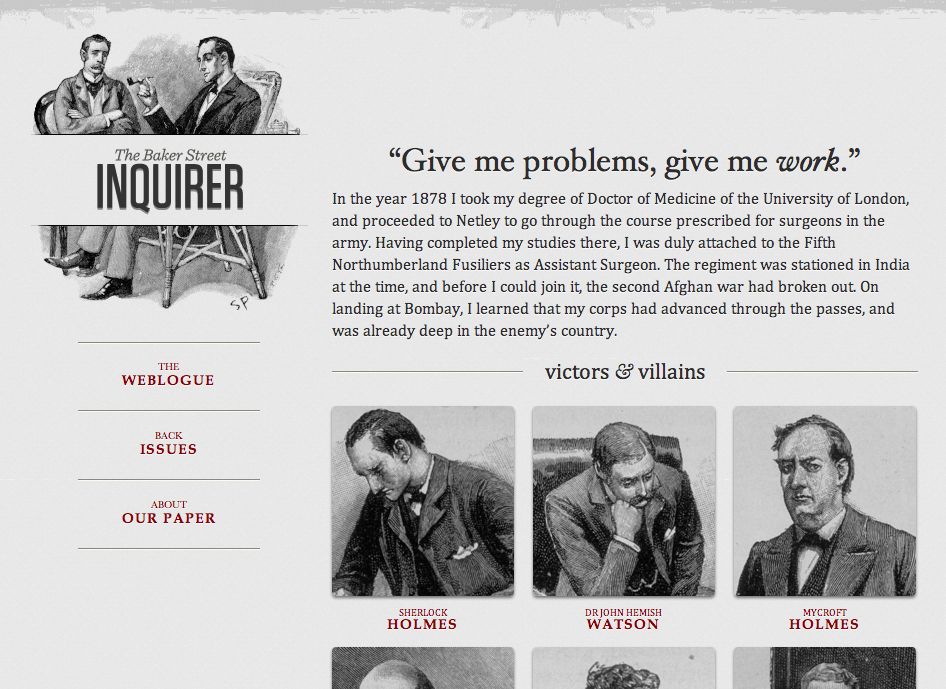
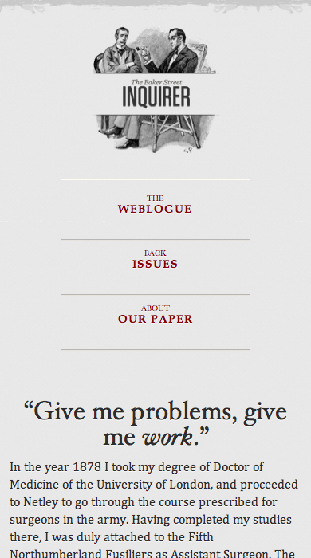

MWF
Mobile Web Framework
Native or Web?
The Native App
- Rich set of features
- Centralized distribution platforms
- Development specific to OS and device
- Varied paradigms and architectures
- Rise and fall of native platforms
- Manual updates
The Mobile Web App
- Single established platform
- Existing paradigms and arcitecture
- Automatic updates
- Mixed support between devices
- New and evolving API
- No central distribution platform
Solving Challenges of the Mobile Web
Mixed support between devices
Fully compatible markup standard
Framework enhances and degrades experience
No device-by-device planning
New and evolving API
Devices that can use it, should use it
Create support where possible but not native
The MWF Strategy
Semantic markup standard
Leverage framework features through classes and ids
Dynamic CSS and Javascript
Enhance and degrade based on device capabilities
Included through script and link tags
Platform independence and federation
Intrinsic to the technology stack
Getting Started
Create a page with script and link tag:
<link rel="stylesheet" type="text/css"
href="http://[DOMAIN]/assets/css.php">
<script type="text/javascript"
src="http://[DOMAIN]/assets/js.php"></script>Start using the MWF!
All HTML classes/ids and JS core always available
Additional libraries available on demand
Special assets like compressors
How does this work?
An app has a page with MWF handlers
When a user visits the page,
the user's browser requests css.php and js.php
the MWF gathers telemetry on the device
the MWF classifies device and generates CSS/JS
the page is rendered from generated CSS/JS
Process is transparent to the app (semantic markup)
Features
Page-level UI: header, footer
Content-level UI: content, menu, button, form, message
Telemetry: capability exposure
Interaction: transitions, touch transitions, geolocation
Compression: CSS, JS, images
Utilities: normalization, redirection
Example: Message
<div class="message alert">Alert message</div>
<div class="message confirm">Confirm message</div>
<div class="message error">Error message</div>
<div class="message info">Info message</div>Example: Form
<form action="#">
<h2>Example Form</h2>
<label>Label for Input</label>
<input name="t-1" type="text">
<label>Label for Checkbox Group</label>
<div class="option">
<label><input name="c-1" value="1" type="checkbox">One</label>
<label><input name="c-2" value="2" type="checkbox">Two</label>
</div>
<input value="Submit" class="primary" type="submit">
</form>Learn More
Repository
https://github.com/ucla/mwf
Documentation
http://mwf.ucla.edu/framework13/doc/
WebBlocks
Responsive Toolkit
Evolving Web
Fully-capable mobile devices are becoming pervasive
Changing perceptions of how mobile is used
Rise of tablets, wearables and more
Responsive Web Design
Website transforms to fit the user's
needs
and capabilities
Viewport
Context
Bandwidth
Pixel Density
Battery Life
Key Components
Flexible Grid
Responsive Media
Media Queries
 |
 |  |
A Tale of Two Frameworks
Technologies and target audience are different
but many shared concepts between MWF and WebBlocks:
Device agnosticism
Platform independence
Federation
Use cases drive what works for you:
Who's your intended demographic?
Do you have an existing website? Are you rewriting it?
What frameworks are you currently using?
Staying Flexible with a Toolkit
A lot of good tools already exist
Extend and integrate, don't recreate
Not every use case is the same
Federated or individual deployments?
Which tools do you need?
What if you're already using a framework?
Architecture of packages, adapters and extensions
Features
Powerful fluid layout system
Rich UI element and interactivity libraries
Responsive images and video
Polyfills for older devices
Customized builds exactly for needs
Adapters to bind to other frameworks
Extensions for campus and unit specific needs
Learn More
Repository
https://github.com/ucla/WebBlocks
Documentation
http://ucla.github.io/WebBlocks/doc